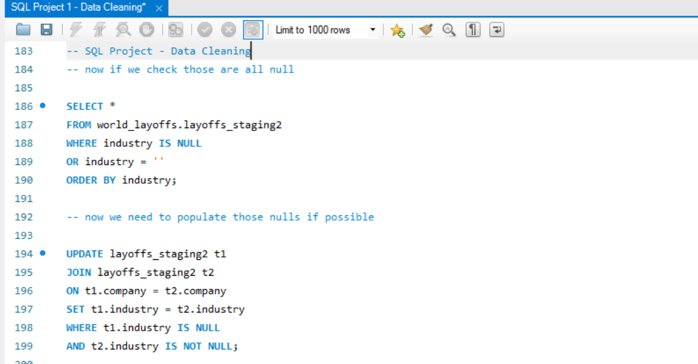

Data Cleaning in SQL

Project Overview
This project focuses on cleaning the Layoffs Dataset using several SQL techniques including removing duplicates, standardizing data, handling null values, and correcting inconsistent entries.
Code
View SQL Cleaning Script →Dataset
layoffs-data-cleaning-and-analysis.csvKey Steps Performed
- Removed duplicate rows using CTE + ROW_NUMBER()
- Standardized inconsistent company and industry names
- Handled null and missing values in critical fields
- Formatted date fields for consistent usage
- Prepared optimized dataset for EDA
Why This Matters
Clean, standardized data forms the foundation for accurate analysis. This cleaned dataset is used directly in the next project: EDA in SQL.